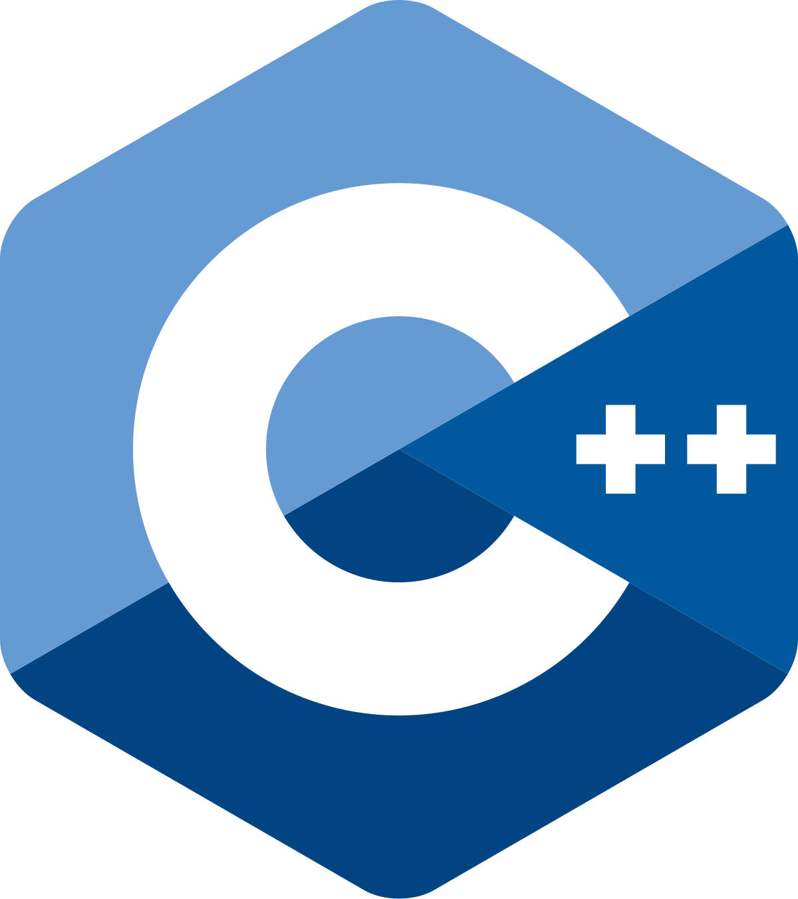
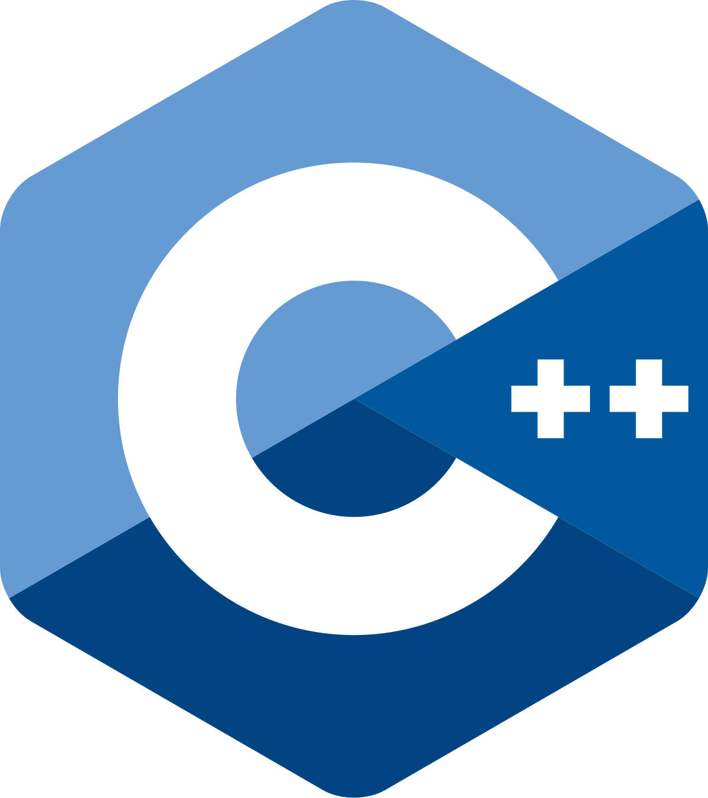

Journey
My passion for programming began in high school, inspired by my Papa, who programmed in his free time and applied those skills in his career as a high school teacher in English, French, and Math. Back in the 1990s, he created a website for students to view notes, submit work, and ask questions—long before such tools became commonplace. He introduced me to Scratch and later Python, sparking my interest in Computer Science.

At the end of my first year of university, I became a research team lead for Lee Language Lab (L³), a language technology research laboratory focusing on language diversity and multilinguality. The laboratory is a collaboration between Ontario Tech University and the University of Toronto, and is under Prof. Annie En-Shiun Lee. This lab combines linguistics and technology, aligning with my bilingual background in English and French and my interest in how history and geography shape languages.
At L³, I led the development of URIEL+, a Python-based database of linguistic features for over 8,000 languages. This database significantly improved natural language processing (NLP) task performance by up to 50%, and our work was recognized with a paper accepted at COLING 2025. In addition, I played a key role in co-developing the NLP curriculum and assignments at Ontario Tech, earning the Audience Award at the Association for Computational Linguistics (ACL) conference.

Currently, I'm spearheading the development of a database of writing systems, expanding the typological comprehensiveness of languages by up to 150%. These experiences have honed my skills in computer science, technical report writing, collaboration, and leadership.
Education
I'm in my second year at Ontario Tech University, pursuing a degree in Computer Science with a minor in Mathematics. I chose Ontario Tech for its growth-focused environment, strong scholarship support, and local accessibility.
- Perfect GPA: Achieved A+ in all courses, including key topics such as:
- Data Structures
- Computer Architecture
- Programming Workshop (Low-Level Programming)
- Statistics and Probability
- Linear Algebra
- Calculus
- Honors and Recognition:
- President's List for all semesters
- In-Course Scholarship for academic excellence in the first year
- Extracurricular Activities:
- Peer Educator: At the Student Learning Centre, I mentor first- and second-year students in calculus, linear algebra, statistics, and computer science, assisting over 65 students in the Fall 2024 semester.
- OTU Computer Science Club: Facilitated weekly talks by guest speakers from L³, enhancing club engagement and fostering academic connections.
- Volunteer Experience: Participated in STEM Hacks 2023 as an Engineering Team Member with Mathstronauts, mentoring 200 Junior students on artificial intelligence and autonomous vehicle challenges.
Interests
Outside of academics and research work, I am interested in current events, history, geography, reading, swimming, skiing, and spending time in nature through hiking. My fascination with languages, fueled by my bilingual background in English and French, deepens my appreciation for how cultures and communication evolve. Looking ahead, I am actively seeking a co-op role where I can apply my expertise, continue to grow, and contribute to a company's success.

Capybaras
I LOVE CAPYBARAS! I am captivated by their gentle nature, social behavior, and adaptability. As the largest rodents, they thrive in diverse ecosystems and coexist peacefully with other species, embodying harmony and resilience. Their calm demeanor and unique charm always spark joy and curiosity, reflecting my broader appreciation for the wonders of nature. In fact, I often use the photo of a capybara dressed in clothing on the left as my profile picture across most of my social media platforms.